| 레퍼런스 | 가져온 점 | 후보 |
|---|---|---|
| GitHub 활동 그래프 | 시간 칸을 한 가지 색의 진하기로만. 줄끼리 비교가 쉬움. "적음 ◻◼ 많음" 범례 | 1 |
| Extremists on Both Sides (awwwards 데이터 시각화) | 사건 하나 = 작은 네모 하나. 쌓인 양이 곧 규모 | 2 |
| Ground News | 성향 비율을 얇은 3칸 막대 하나 + %로 | 3 |
| WC 2026 Data Portraits (awwwards) | 같은 모양 작은 그래프를 줄마다 반복(스몰 멀티플), 모든 줄이 같은 축 | 공통 |
| Particle · FieldRank · People's Audit | 메타는 작은 고정폭 한 줄("237 ARTICLES · 2H AGO") | 공통 |
| Al Jazeera · Cursor · Linear (디자인 문서) | 강조색은 한 가지 뜻에만(여기선 '최근 24시간'), 타임라인 색은 타임라인 안에서만 | 공통 |
| Jakub · Emil 스킬 | 색만으로 뜻 전달 금지(범례·글자 함께), 자주 보는 화면은 움직임 없이 | 공통 |
확인했지만 쓰지 않은 것: Obama 기록 사이트(접근 차단 403, 우회 안 함), Ground News 이야기 상세(가입 필요), Polymarket(국가 차단), Where the Shadow Fell·Everest(시각 연출 위주라 정리 화면과 맞지 않음).
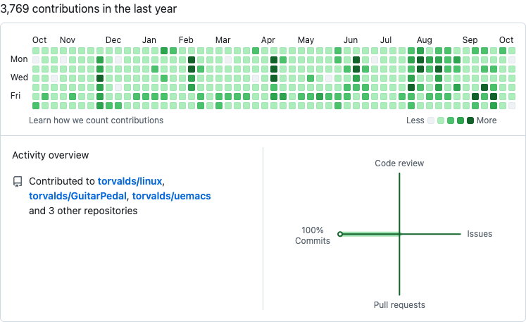
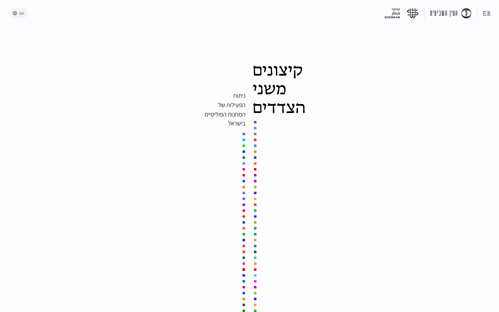
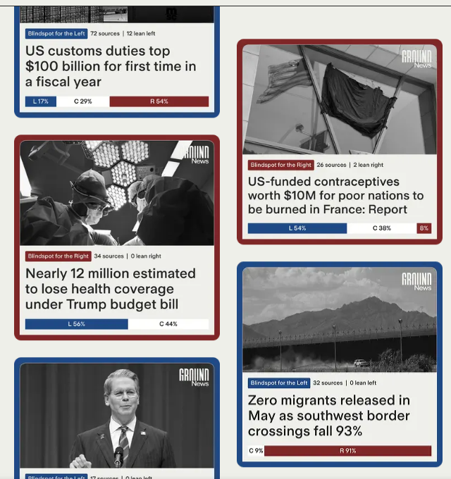
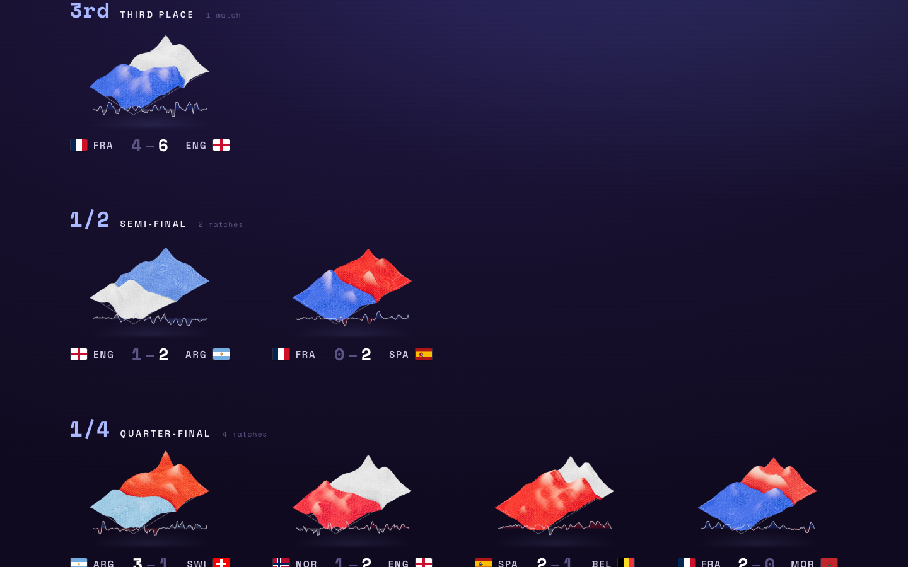
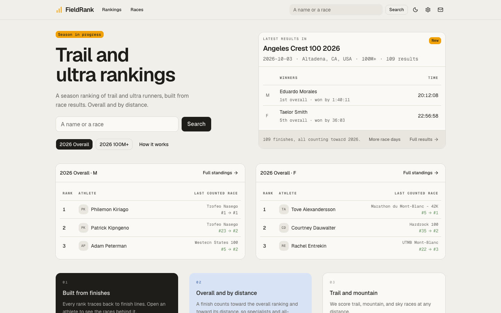
6시간 칸마다 소식 양을 보라 진하기로. 언제 뜨거웠는지가 가장 빨리 보여요. 직접 열기
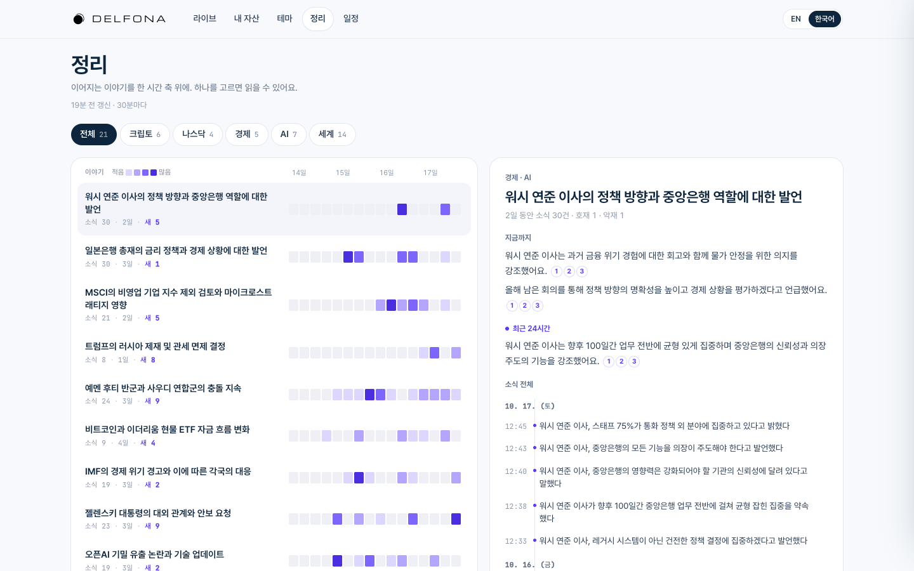
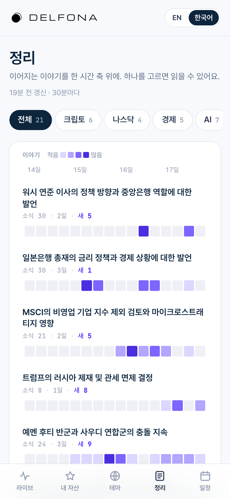
하루 칸마다 소식 하나 = 네모 하나. 정확한 양이 보이고, 최근 24시간은 보라. 큰 소식은 진하게. 직접 열기
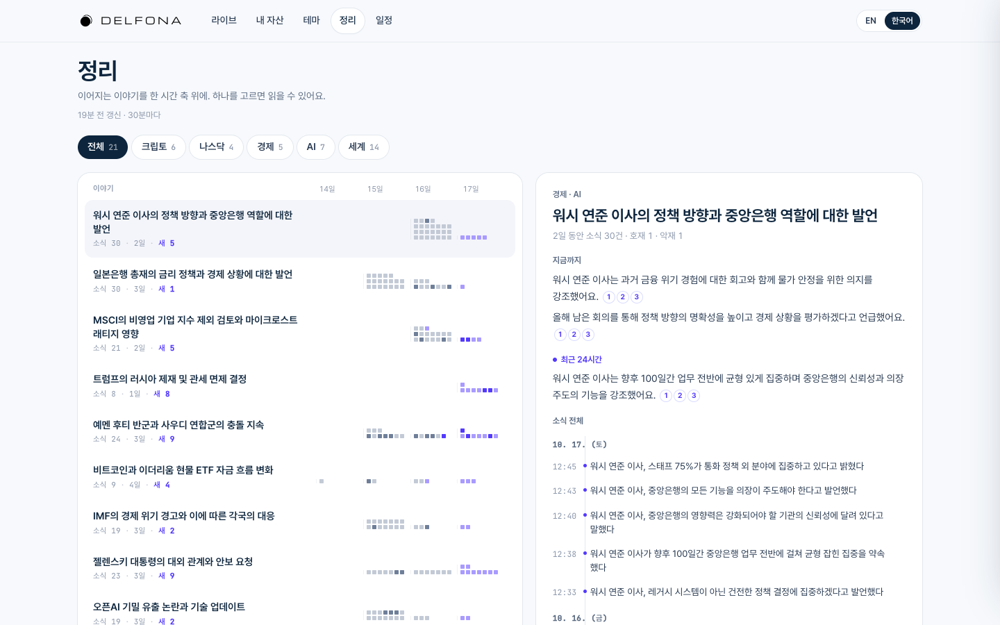
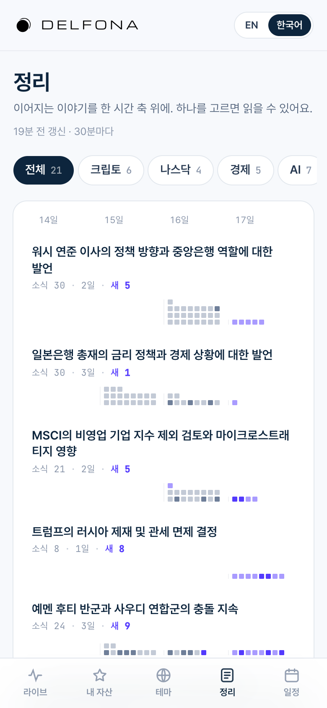
소식 양의 흐름을 얇은 선(최근 24시간은 보라)으로, 오른쪽에 호재·중립·악재 비율. 분위기까지 한 줄에. 직접 열기
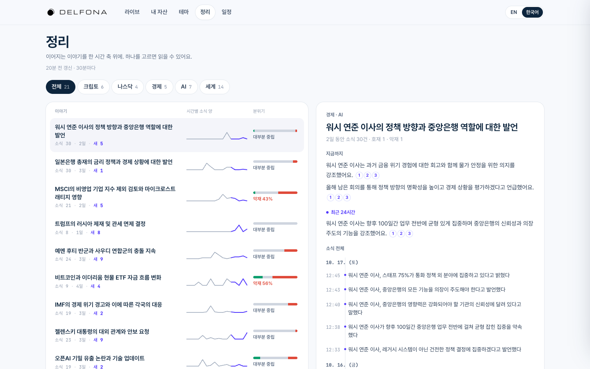
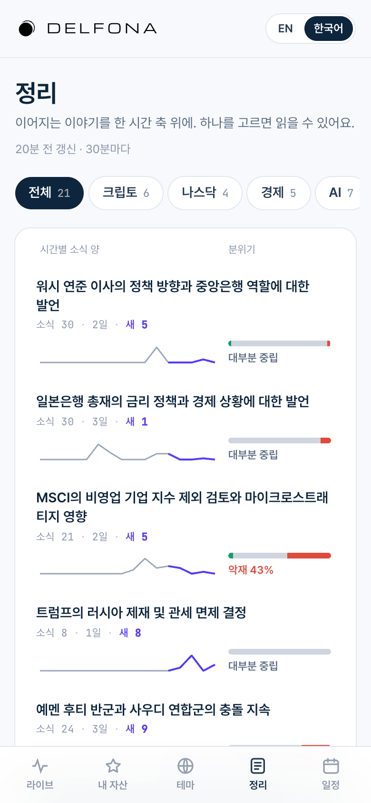